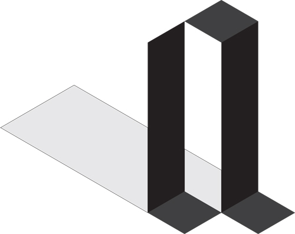

Folding Fraktur
The assignment was to make two fonts, one free and one based on some grid.
Long before I came to the Design Academy I was playing around with different systems for letters. One of the types that fascinated me was the fraktur,
I drew a lot of those. When I got this assignment I looked for a robust system for a fraktur. A detail that had caught my eye was how the thickness of
the hooks are determined by the thickness of the stems. To me this suggests perspective so I tried to make the entire alphabet as of cut and folded paper.
In the end I could make a digital and a analogue version for the two fonts required for the assignment. For the analogue font I sadly did not have the
patience to find a way to overcome the issues of perspective of the photographs. But this does gives the analogue font a loose feel that contrasts well
with the rigidity of the digital font.
The teacher was happy with this project, he specially appreciated the lateral thinking that allowed a two dimensional font to become three-dimensional.